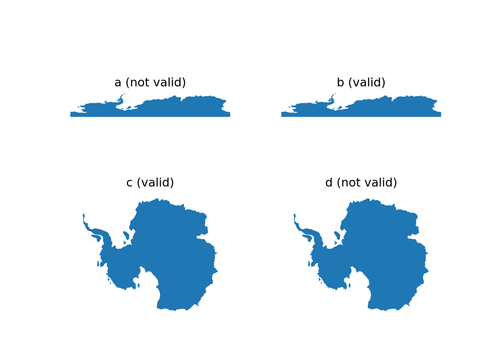

“There are too many false conclusions drawn and stupid measurements made when geographic software, built for projected Cartesian coordinates in a local setting, is applied at the global scale” (Chrisman 2012)
The previous chapter discussed geometries defined on the plane, \(R^2\). This chapter discusses what changes when we consider geometries not on the plane, but on the sphere (\(S^2\)).
Although we learned in Chapter 2 that the shape of the Earth is usually approximated by an ellipsoid, none of the libraries shown in green in Figure 1.7 provide access to a comprehensive set of functions that compute on an ellipsoid. Only the s2geometry (Dunnington, Pebesma, and Rubak 2023; Veach et al. 2020) library does provide it using a sphere rather than an ellipsoid. However, when compared to using a flat (projected) space as we did in the previous chapter, a sphere is a much better approximation to an ellipsoid.
4.1 Straight lines
The basic premise of simple features of Chapter 3 is that geometries are represented by sequences of points connected by straight lines. On \(R^2\) (or any Cartesian space), this is trivial, but on a sphere straight lines do not exist. The shortest line connecting two points is an arc of the circle through both points and the centre of the sphere, also called a great circle segment. A consequence is that “the” shortest distance line connecting two points on opposing sides of the sphere does not exist, as any great circle segment connecting them has equal length. Note that the GeoJSON standard (Butler et al. 2016) has its own definition of straight lines in geodetic coordinates (see Exercise 1 at the end of this chapter).
4.2 Ring direction and full polygon
Any polygon on the sphere divides the sphere surface in two parts with finite area: the inside and the outside. Using the “counter-clockwise rule” as was done for \(R^2\) will not work because the direction interpretation depends on what is defined as inside. A convention here is to define the inside as the left (or right) side of the polygon boundary when traversing its points in sequence. Reversal of the node order then switches inside and outside.
In addition to empty polygons, one can define the full polygon on a sphere, which comprises its entire surface. This is useful, for instance for computing the oceans as the geometric difference between the full polygon and the union of the land mass (see Figure 8.1 and Figure 11.6).
4.3 Bounding box, rectangle, and cap
Where in \(R^2\) one can easily define bounding boxes as the range of the \(x\) and \(y\) coordinates, for ellipsoidal coordinates these ranges are not of much use when geometries cross the antimeridian (longitude +/- 180) or one of the poles. The assumption in \(R^2\) that lower \(x\) values are Westwards of higher ones does not hold when crossing the antimeridian. An alternative to delineating an area on a sphere that is more natural is the bounding cap, defined by its centre coordinates and a radius. For Antarctica, as depicted in Figures 4.1 (a) and (c), the bounding box formed by coordinate ranges is
where a value lng_lolarger than lng_hi indicates that the bounding rectangle spans the antimeridian. This property could not be inferred from the coordinate ranges.
4.4 Validity on the sphere
Many global datasets are given in ellipsoidal coordinates but are prepared in a way that they “work” when interpreted on the \(R^2\) space [-180,180] \(\times\) [-90,90]. This means that:
geometries crossing the antimeridian (longitude +/- 180) are cut in half, such that they no longer cross it (but nearly touch each other)
geometries including a pole, like Antarctica, are cut at +/- 180 and make an excursion through -180,-90 and 180,-90 (both representing the Geographic South Pole)
Figure 4.1 shows two different representations of Antarctica, plotted with ellipsoidal coordinates taken as \(R^2\) (top) and in a Polar Stereographic projection (bottom), without (left) and with (right) an excursion through the Geographic South Pole. In the projections as plotted, polygons (b) and (c) are valid, polygon (a) is not valid as it self-intersects, and polygon (d) is not valid because it traverses the same edge to the South Pole twice. On the sphere (\(S^2\)), polygon (a) is valid but (b) is not, for the same reason as (d) is not valid.
Figure 4.1: Antarctica polygon, (a, c): not passing through POINT(-180 -90); (b, d): passing through POINT(-180 -90) and POINT(180 -90)
Code
import matplotlib.pyplot as pltimport geopandas as gpd# create a 2 by 2 grid of plotsfig, axs = plt.subplots(2, 2)# get map data for Antarcticaurl ="https://naciscdn.org/naturalearth/110m/cultural/ne_110m_admin_0_countries.zip"m = gpd.read_file(url)m = m[m.NAME =="Antarctica"]axs[0, 0].set_title("a (not valid)")m.geometry.plot(ax=axs[0, 0])axs[0, 0].set_aspect(2)axs[0,0].axis(False)# (np.float64(-197.99999999999994), np.float64(198.0), np.float64(-91.33646697552477), np.float64(-61.93419351397985))# get country data for Antarcticane = gpd.read_file('data/ne_110m_admin_0_countries.shp')ne = ne[ne['REGION_WB'] =="Antarctica"]ne.geometry.plot(ax=axs[0, 1])axs[0, 1].set_title("b (valid)")axs[0, 1].set_aspect(2)axs[0,1].axis(False)# (np.float64(-197.99999999999994), np.float64(198.0), np.float64(-91.33646697552477), np.float64(-61.93419351397985))# transform the map data to EPSG:3031 projection and plot itm_conv = m.to_crs("EPSG:3031")m_conv.geometry.plot(ax=axs[1, 0])axs[1, 0].set_title("c (valid)")axs[1,0].axis(False)# (np.float64(-2768322.446295571), np.float64(2884107.2484051525), np.float64(-2337950.753444762), np.float64(2401705.684047072))# transform the country data to EPSG:3031 projection and plot itne_conv = ne.to_crs("EPSG:3031")ne_conv.geometry.plot(ax=axs[1, 1])axs[1, 1].set_title("d (not valid)")axs[1,1].axis(False)# (np.float64(-2768322.446295571), np.float64(2884107.2484051525), np.float64(-2337950.753444762), np.float64(2401705.684047072))plt.show()

Antarctica polygon, (a, c): not passing through POINT(-180 -90); (b, d): passing through POINT(-180 -90) and POINT(180 -90)
4.5 Exercises
For the following exercises, use R where possible or relevant.
How does the GeoJSON format (Butler et al. 2016) define “straight” lines between ellipsoidal coordinates (Section 3.1.1)? Using this definition of straight, how does LINESTRING(0 85,180 85) look like in an Arctic polar projection? How could this geometry be modified to have it cross the North Pole?
For a typical polygon on \(S^2\), how can you find out ring direction?
Are there advantages of using bounding caps over using bounding boxes? If so, list them.
Why is, for small areas, the orthographic projection centred at the area a good approximation of the geometry as handled on \(S^2\)?
For rnaturalearth::ne_countries(country = "Fiji", returnclass = "sf"), check whether the geometry is valid on \(R^2\), on an orthographic projection centred on the country, and on \(S^2\). How can the geometry be made valid on \(S^2\)? Plot the resulting geometry back on \(R^2\). Compare the centroid of the country, as computed on \(R^2\) and on \(S^2\), and the distance between the two.
Consider dataset gisco_countries in R package giscoR, and select the country with NAME_ENGL == "Fiji". Does it have a valid geometry on the sphere? If so, how was this accomplished?
Butler, H., M. Daly, A. Doyl, S. Gillies, S. Hagen, and T. Schaub. 2016. “The GeoJSON Format.” Vol. Request for Comments: 7946. Internet Engineering Task Force (IETF). https://tools.ietf.org/html/rfc7946.
Chrisman, Nicholas. 2012. “A Deflationary Approach to Fundamental Principles in GIScience.” In Francis Harvey (Ed.) Are There Fundamental Principles in Geographic Information Science?, 42–64. CreateSpace, United States.
Dunnington, Dewey, Edzer Pebesma, and Ege Rubak. 2023. S2: Spherical Geometry Operators Using the S2 Geometry Library. https://CRAN.R-project.org/package=s2.
Veach, Eric, Jesse Rosenstock, Eric Engle, Robert Snedegar, Julien Basch, and Tom Manshreck. 2020. “S2 Geometry.”Website. https://s2geometry.io/.
Source Code
# Spherical Geometries {#sec-spherical}"_There are too many false conclusions drawn and stupid measurementsmade when geographic software, built for projected Cartesiancoordinates in a local setting, is applied at the global scale_"[@chrisman]The previous chapter discussed geometries defined on the plane,$R^2$. This chapter discusses what changes when we considergeometries not on the plane, but on the sphere ($S^2$).Although we learned in @sec-cs that the shape of the Earthis usually approximated by an ellipsoid, none of the libraries shownin green in @fig-gdal-fig-nodetails provide accessto a comprehensive set of functions that compute on an ellipsoid.Only the s2geometry [@R-s2; @s2geometry] library does provide itusing a sphere rather than an ellipsoid. However, when comparedto using a flat (projected) space as we did in the previous chapter,a sphere is a _much_ better approximation to an ellipsoid.\index{coordinates!spherical or planar}## Straight lines {#sec-straight}The basic premise of _simple features_ of @sec-geometriesis that geometries are represented by sequences of points _connectedby straight lines_. On $R^2$ (or any Cartesian space), this istrivial, but on a sphere straight lines do not exist. The shortestline connecting two points is an arc of the circle through bothpoints and the centre of the sphere, also called a _great circlesegment_. A consequence is that "the" shortest distance lineconnecting two points on opposing sides of the sphere does not exist,as any great circle segment connecting them has equal length.Note that the GeoJSON standard [@geojson] has its own definitionof straight lines in geodetic coordinates (see Exercise 1 at theend of this chapter).\index{coordinates!straight line}\index{coordinates!great circle}\index{great circle segment}## Ring direction and full polygonAny polygon on the sphere divides the sphere surface in two partswith finite area: the inside and the outside. Using the"counter-clockwise rule" as was done for $R^2$ will not workbecause the direction interpretation depends on what is definedas inside. A convention here is to define the inside as the left(or right) side of the polygon boundary when traversing its pointsin sequence. Reversal of the node order then switches inside andoutside.\index{polygon!inside or outside on sphere}\index{polygon!ring direction}In addition to empty polygons, one can define the _full polygon_on a sphere, which comprises its entire surface. This is useful,for instance for computing the oceans as the geometric differencebetween the full polygon and the union of the land mass (see@fig-world and @fig-srsglobe).\index{polygon!full vs. empty}\index{full polygon}## Bounding box, rectangle, and cap\index{coordinates!bounding box}\index{bounding cap}\index{bounding box}\index{bounding rectangle}\index{antimeridian}Where in $R^2$ one can easily define bounding boxes as the rangeof the $x$ and $y$ coordinates, for ellipsoidal coordinates theseranges are not of much use when geometries cross the antimeridian(longitude +/- 180) or one of the poles. The assumption in $R^2$that lower $x$ values are Westwards of higher ones does not holdwhen crossing the antimeridian. An alternative to delineatingan area on a sphere that is more natural is the _bounding cap_,defined by its centre coordinates and a radius. For Antarctica,as depicted in Figures -@fig-antarctica (a) and (c), thebounding box formed by coordinate ranges is::: panel-tabset#### R```{r fig-caprect, echo=!knitr::is_latex_output()}#| code-fold: true#| collapse: false#| out.width: 100%library(sf) |>suppressPackageStartupMessages()library(maps) |>suppressPackageStartupMessages()library(dplyr) |>suppressPackageStartupMessages()map(fill =TRUE, plot =FALSE) |>st_as_sf() |>filter(ID =="Antarctica") -> ast_bbox(a)```#### Python```{python}#| code-fold: true#| collapse: false#| out.width: 100%import geopandas as gpdimport matplotlib.pyplot as plturl ="https://naciscdn.org/naturalearth/110m/cultural/ne_110m_admin_0_countries.zip"ne = gpd.read_file(url)antarctica = ne[ne.CONTINENT =="Antarctica"]bbox = antarctica.total_boundsbbox```:::which clearly does not contain the region (`ymin` being -90 and `xmax` 180).Two geometries that do contain the region are the bounding cap:```{r echo=!knitr::is_latex_output()}#| code-fold: true#| collapse: falselibrary(s2)s2_bounds_cap(a)```and the bounding _rectangle_:```{r echo=!knitr::is_latex_output()}#| code-fold: true#| collapse: falses2_bounds_rect(a)```For an area spanning the antimeridian, here the Fiji island country,the bounding box:::: panel-tabset#### R```{r echo=!knitr::is_latex_output()}#| code-fold: true#| collapse: falsemap(fill =TRUE, plot =FALSE) |>st_as_sf() |>filter(ID =="Fiji") -> Fijist_bbox(Fiji)```#### Python```{python}url ="https://naciscdn.org/naturalearth/110m/cultural/ne_110m_admin_0_countries.zip"ne = gpd.read_file(url)Fiji = ne[ne.NAME =="Fiji"]bbox = Fiji.total_boundsbbox```:::seems to span most of the Earth, as opposed to the bounding rectangle:```{r echo=!knitr::is_latex_output()}#| code-fold: true#| collapse: falses2_bounds_rect(Fiji)```where a value `lng_lo` _larger_ than `lng_hi` indicates that thebounding rectangle spans the antimeridian. This property could notbe inferred from the coordinate ranges.## Validity on the sphere\index{geometry!valid on the sphere}\index{polygon!valid on the sphere}Many global datasets are given in ellipsoidal coordinates but areprepared in a way that they "work" when interpreted on the $R^2$space [-180,180] $\times$ [-90,90]. This means that:* geometries crossing the antimeridian (longitude +/- 180) are cut inhalf, such that they no longer cross it (but nearly touch each other)* geometries including a pole, like Antarctica, are cut at +/- 180 andmake an excursion through -180,-90 and 180,-90 (both representing theGeographic South Pole)@fig-antarctica shows two different representations ofAntarctica, plotted with ellipsoidal coordinates taken as $R^2$(top) and in a Polar Stereographic projection (bottom), without(left) and with (right) an excursion through the Geographic SouthPole. In the projections as plotted, polygons (b) and(c) are valid, polygon (a) is not valid as it self-intersects, andpolygon (d) is not valid because it traverses the same edge to theSouth Pole twice. On the sphere ($S^2$), polygon (a) is valid but(b) is not, for the same reason as (d) is not valid.::: panel-tabset#### R```{r fig-antarctica, echo=!knitr::is_latex_output()}#| code-fold: true#| out.height: 70%#| fig.cap: "Antarctica polygon, (a, c): _not_ passing through `POINT(-180 -90)`; (b, d): passing through `POINT(-180 -90)` and `POINT(180 -90)`"# maps:par(mfrow =c(2,2))par(mar =c(1,1.2,1,1))m <-st_as_sf(map(fill=TRUE, plot=FALSE))m <- m[m$ID =="Antarctica", ]plot(st_geometry(m), asp =2)title("a (not valid)")# ne:library(rnaturalearth)ne <-ne_countries(returnclass ="sf")ne <- ne[ne$region_un =="Antarctica", "region_un"]plot(st_geometry(ne), asp =2)title("b (valid)")# 3031m |>st_geometry() |>st_transform(3031) |>plot()title("c (valid)")ne |>st_geometry() |>st_transform(3031) |>plot()title("d (not valid)")```#### Python```{python}#| code-fold: true#| out.height: 70%#| fig.cap: "Antarctica polygon, (a, c): _not_ passing through `POINT(-180 -90)`; (b, d): passing through `POINT(-180 -90)` and `POINT(180 -90)`"import matplotlib.pyplot as pltimport geopandas as gpd# create a 2 by 2 grid of plotsfig, axs = plt.subplots(2, 2)# get map data for Antarcticaurl ="https://naciscdn.org/naturalearth/110m/cultural/ne_110m_admin_0_countries.zip"m = gpd.read_file(url)m = m[m.NAME =="Antarctica"]axs[0, 0].set_title("a (not valid)")m.geometry.plot(ax=axs[0, 0])axs[0, 0].set_aspect(2)axs[0,0].axis(False)# get country data for Antarcticane = gpd.read_file('data/ne_110m_admin_0_countries.shp')ne = ne[ne['REGION_WB'] =="Antarctica"]ne.geometry.plot(ax=axs[0, 1])axs[0, 1].set_title("b (valid)")axs[0, 1].set_aspect(2)axs[0,1].axis(False)# transform the map data to EPSG:3031 projection and plot itm_conv = m.to_crs("EPSG:3031")m_conv.geometry.plot(ax=axs[1, 0])axs[1, 0].set_title("c (valid)")axs[1,0].axis(False)# transform the country data to EPSG:3031 projection and plot itne_conv = ne.to_crs("EPSG:3031")ne_conv.geometry.plot(ax=axs[1, 1])axs[1, 1].set_title("d (not valid)")axs[1,1].axis(False)plt.show()```:::## ExercisesFor the following exercises, use R where possible or relevant.1. How does the [GeoJSON](https://tools.ietf.org/html/rfc7946) format [@geojson] define "straight" lines between ellipsoidal coordinates (Section 3.1.1)? Using this definition of straight, how does `LINESTRING(0 85,180 85)` look like in an Arctic polar projection? How could this geometry be modified to have it cross the North Pole?2. For a typical polygon on $S^2$, how can you find out ring direction?3. Are there advantages of using bounding caps over using bounding boxes? If so, list them.4. Why is, for small areas, the orthographic projection centred at the area a good approximation of the geometry as handled on $S^2$?5. For `rnaturalearth::ne_countries(country = "Fiji", returnclass = "sf")`, check whether the geometry is valid on $R^2$, on an orthographic projection centred on the country, and on $S^2$. How can the geometry be made valid on $S^2$? Plot the resulting geometry back on $R^2$. Compare the centroid of the country, as computed on $R^2$ and on $S^2$, and the distance between the two.6. Consider dataset `gisco_countries` in R package **giscoR**, and select the country with `NAME_ENGL == "Fiji"`. Does it have a valid geometry on the sphere? If so, how was this accomplished?